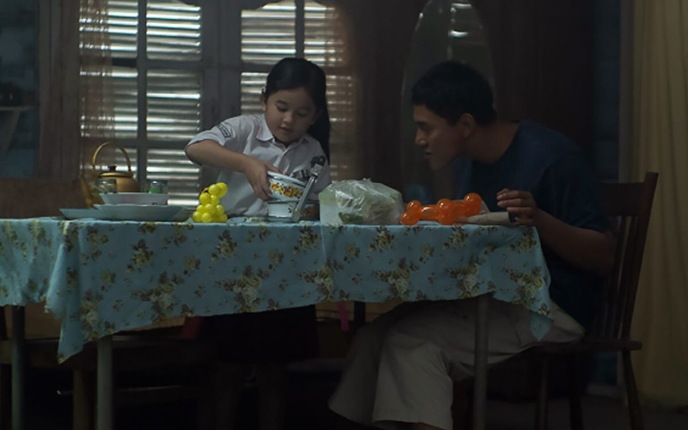
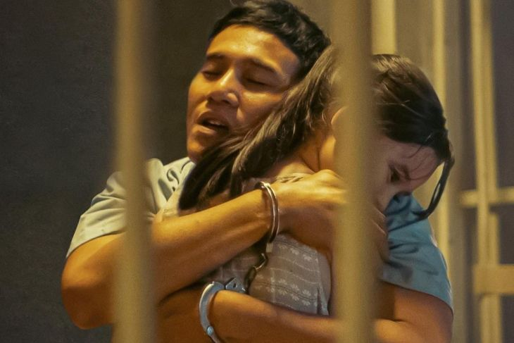

Sinopsis film - "Miracle in Cell No.7" versi Indonesia
ditulis oleh NadaPutri pada 21 oktober 2023
Artikel ini telah tayang di ANTARAGORONTALO
Sebagian besar penikmat film mungkin sudah pernah menyaksikan "Miracle in Cell No.7" asli karya sutradara Korea Selatan Lee Hwan Kyung tahun 2013. Tentunya masih ingat juga adegan demi adegan yang membuat haru biru sepanjang pemutaran film.
Hal serupa juga dapat ditemukan dalam "Miracle in Cell No.7" versi Indonesia atau karya dari Hanung Bramantyo. Film ini kurang lebih menghadirkan suasana yang tak jauh beda, menangis, tertawa, menangis lagi, tertawa lagi hingga membuat dada terasa penuh.
kabarpriangan.pikiran-rakyat.com
Diceritakan Dodo (Vino G Bastian), seorang ayah dengan kecerdasan terbatas, hanya ingin menjadi ayah yang baik bagi anaknya, Kartika (Graciella Abigail). Kartika yang saat itu masih sangat kecil selalu berusaha untuk menjaga dan merawat sang ayah.
Keduanya menjalani hidup yang bahagia, dan Kartika bangga dengan ayahnya yang hanya berjualan balon. Namun, kebahagiaan tersebut hanya sementara, karena Dodo dan Kartika kemudian terpaksa berpisah.
Dodo ditangkap atas tuduhan pemerkosaan dan pembunuhan terhadap gadis kecil yang bernama Melati.
Dodo mendekam di sel penjara Nomor 7 yang dihuni oleh beberapa napi, seperti Ketua Geng (Indro Warkop), Jaki (Tora Sudiro), Asrul (Bryan Domani), Bewok (Rigel) dan Atmo (Indra Jegel).
Dodo melewati berbagai peristiwa yang kurang menyenangkan dalam sel penjara, namun pada akhirnya dia menjadi kesayangan rekan-rekan napi. Dodo yang sangat rindu dengan Kartika pun mendapatkan bantuan untuk menyelundupkan sang putri ke dalam sel.
Kedekatan antara Dodo dan Kartika, ternyata menularkan kebahagiaan bagi para napi lain yang di penjara di sel tersebut.
Mereka pun mulai meragukan tuduhan atau kasus pemerkosaan dan pembunuhan yang dilakukan Dodo. Akhirnya para napi bahu-membahu untuk menyiapkan pembelaan terhadap Dodo di persidangan.
11-12 dengan aslinya
Seperti remake pada umumnya, "Miracle in Cell No.7" memiliki alur cerita yang tak jauh berbeda. Hanya saja, versi Hanung ini mempunyai kisah menariknya sendiri, terasa sangat Indonesia, seperti adanya wartel, rumah pinggir rel, hingga kegiatan anak-anak mengaji di sore hari.
Penggambaran yang sempurna ini pun membuat penonton begitu dekat dengan kisahnya, dan menjadikan "Miracle in Cell No.7" seperti milik Indonesia sendiri. Awal film diputar, penonton mungkin agak sedikit deg-degan ke mana cerita ini akan dibawa. Lima menit terlewati, kenyamanan dan kehangatan hubungan antara ayah dan anak ini terasa hingga bangku penonton.
Besarnya cinta dan kasih sayang Dodo kepada Kartika, mampu membuat siapa saja yang menyaksikan langsung mengenang sosok ayahnya sendiri.
Menangis-tertawa brutal
Penikmat film yang berencana menyaksikan "Miracle in Cell No.7" pasti sudah tahu konsekuensinya, yakni menangis tanpa henti. Tak perlu berlama-lama, 10 menit pertama saat film dimulai, penonton sudah dibuat berkaca-kaca.
Kemudian 10 menit setelahnya, dibuat tertawa terpingkal-pingkal lalu menangis lagi secara tiba-tiba. Emosi penonton seolah diajak naik rollercoster secara cepat.
Namun itu baru setengah film saja, babak berikutnya Hanung benar-benar akan menguras seluruh airmata penonton tanpa tersisa. Adegan-adegan ikonik dan titik klimaks dari "Miracle in Cell No.7" disuguhkan secara sempurna dan menggetarkan hati.
Tak heran jika sang sutradara asli Lee Hwan Kyung sempat mengatakan bahwa remake versi Indonesia adalah yang terbaik di antara negara lain.
"Saya percaya film ini bisa sukses, bahkan melampaui film Korea-nya," ujar Lee Hwan Kyung pada Agustus lalu.
Film ini merupakan sebuah paket lengkap yang menyajikan komedi segar khas orang Indonesia yang dilontarkan oleh komika.
Penuh totalitas
Acungan jempol baik atas film ini tak hanya diberikan kepada Hanung, tapi juga untuk para aktor dan aktris yang terlibat. Tanpa Vino, Graciella dan Mawar de Jongh (Kartika dewasa), mungkin pesan dan emosi yang ingin disalurkan pada film tidak akan sampai.
Tanpa Indro, Tora, Indra Jegel dan Bryan, mungkin juga komedinya tidak akan selucu itu. Semua pemain memberikan porsinya masing-masing dan patut diapresiasi. Namun, kehadiran Graciella Abigail benar-benar mencuri perhatian. Tokoh Kartika kecil merupakan salah satu kunci penting dari keberhasilan film ini.
Totalitas Graciella membuat "Miracle in Cell No.7" menjadi film yang benar-benar menyentuh dan meninggalkan kesan yang dalam.
Sementara itu, karakter Dodo akan sangat kuat sekaligus rentan jika tidak disampaikan dengan baik oleh aktornya. Vino mampu memainkannya dengan piawai sehingga menimbulkan simpatik. Siapapun akan langsung mengasihi Dodo. Secara keseluruhan, "Miracle in Cell No.7" adalah film yang sangat menggetarkan dan menghangatkan hati. Film tersebut pun mampu bersanding dengan versi aslinya.
Hilangkan semua gengsi dan biarkan airmata mengalir saat menyaksikan "Miracle in Cell No.7". Haru, sedih, bahagia akan memenuhi hati penonton usai menyaksikannya.
"Miracle in Cell No.7" tayang mulai 8 September 2022 di seluruh bioskop Indonesia. Film ini masuk dalam kategori semua umur (SU) yang bisa disaksikan oleh anak-anak hingga dewasa.
Berita ini telah tayang di Antaranews.com dengan judul: Menangis bersama dalam film "Miracle in Cell No.7"
- Pewarta: Maria Cicilia
- Editor: Hence Paat
- COPYRIGHT © ANTARA 2023